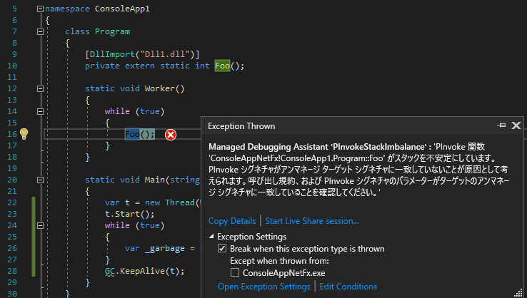

こんにちは、Japan Developer Support Core チームの松井です。今回は、.NET アプリケーションでガベージ コレクション (GC) の実行中にランタイムが例外コード 0xc0000409 を通知してアプリケーションが異常終了する事象について、一般的な例をもとにエラーの発生経緯や調査方法についてご紹介します。
1. 0xC0000409 のエラー コードについて
0xc0000409 は STATUS_STACK_BUFFER_OVERRUN のエラー コードで、一般的にはシステムやランタイムがスタック領域におけるバッファー オーバーランを検出した状況を示しています。このエラーが発生すると、イベント ログには Application Error のソースで ID 1000 のログが以下のような内容で記録されます。
障害が発生しているアプリケーション名: ConsoleApp1.exe、バージョン: 1.0.0.0、タイム スタンプ: 0xbba3dadf 障害が発生しているモジュール名: clr.dll、バージョン: 4.8.4300.0、タイム スタンプ: 0x5f7e61bb 例外コード: 0xc0000409 障害オフセット: 0x0060cd78 障害が発生しているプロセス ID: 0x130a8 障害が発生しているアプリケーションの開始時刻: 0x01d796b92363709c 障害が発生しているアプリケーション パス: C:\Users\user1\source\repos\GSFailureDuringGC\Debug\ConsoleApp1.exe 障害が発生しているモジュール パス: C:\Windows\Microsoft.NET\Framework\v4.0.30319\clr.dll
このログの内容だけ見ると、.NET Framework のランタイム clr.dll で障害が発生しているとのことなので、一見すると .NET Framework のランタイムに不具合があるように見えます。確かにランタイムの不具合により同様のエラーとなる可能性もありますが、結論から述べると、今回はアプリケーションのコードの問題に起因しています。clr.dll で発生する例外コード 0xc0000409 のすべてがこの状況に該当するとは限りませんが、疑われるポイントの一つとして参考にしていただければと幸いです。
2. 例外発生時のコールスタック
以下は例外発生時のマネージ スタックです。こちらは特に異常は見られません。
0:000> !ClrStack
OS Thread Id: 0x7d0c (0)
Child SP IP Call Site
005aeeb0 7493cd78 [HelperMethodFrame: 005aeeb0]
005aef3c 028208da ConsoleApp1.Program.Main(System.String[])
005af0c8 7433f036 [GCFrame: 005af0c8]
以下は例外発生時のアンマネージ スタックです。frame 11 の clr!JIT_NewArr1 で配列のメモリ割り当てが試みられたものの、マネージ ヒープに十分なサイズがなく frame 0c の clr!WKS::gc_heap::trigger_gc_for_alloc から GC が行われていたことが確認できます。その先で最終的に clr!__report_gsfailure が呼びされているため、GC の処理の中でスタックの問題が検出されたことが確認できます。(GS は Guard Stack の略です。__report_gsfailure 関数についてはこちらで詳しく解説されていますのであわせて参考にしてください。)
0:000> k
# ChildEBP RetAddr
00 005ae648 74350688 clr!__report_gsfailure+0x17
01 005ae650 7435065f clr!CrawlFrame::SetCurGSCookie+0x24
02 005ae660 74350e75 clr!CrawlFrame::GotoNextFrame+0x47
03 005ae6a0 74350788 clr!StackFrameIterator::NextRaw+0x4a5
04 005ae964 7435085a clr!Thread::StackWalkFramesEx+0xc2
05 005aec98 74435ed3 clr!Thread::StackWalkFrames+0x9d
06 005aecbc 74435f6e clr!standalone::ScanStackRoots+0x43
07 005aecd8 74438e6b clr!GCToEEInterface::GcScanRoots+0xdb
08 005aed30 74438145 clr!WKS::gc_heap::mark_phase+0x170
09 005aed50 7443847b clr!WKS::gc_heap::gc1+0xae
0a 005aed68 74438585 clr!WKS::gc_heap::garbage_collect+0x367
0b 005aed88 7443868a clr!WKS::GCHeap::GarbageCollectGeneration+0x1bd
0c 005aedac 74438703 clr!WKS::gc_heap::trigger_gc_for_alloc+0x1f
0d 005aede0 744344ff clr!WKS::gc_heap::try_allocate_more_space+0x152
0e 005aedfc 743496f3 clr!WKS::GCHeap::Alloc+0x30
0f 005aee3c 7434f50c clr!Alloc+0xa5
10 005aee90 7434f598 clr!FastAllocatePrimitiveArray+0x10c
11 005aef34 028208da clr!JIT_NewArr1+0x126
12 005aef58 7433f036 0x28208da
13 005aef64 743422da clr!CallDescrWorkerInternal+0x34
14 005aefb8 7434859b clr!CallDescrWorkerWithHandler+0x6b
15 005af024 744eb11b clr!MethodDescCallSite::CallTargetWorker+0x16a
16 005af148 744eb7fa clr!RunMain+0x1b3
17 005af3b4 744eb727 clr!Assembly::ExecuteMainMethod+0xf7
18 005af898 744eb8a8 clr!SystemDomain::ExecuteMainMethod+0x5ef
19 005af8f0 744eb9ce clr!ExecuteEXE+0x4c
1a 005af930 744e7305 clr!_CorExeMainInternal+0xdc
1b 005af96c 74b3fa84 clr!_CorExeMain+0x4d
1c 005af9a4 7540e81e mscoreei!CorExeMain+0x64
1d 005af9b4 75414338 mscoree!ShellShim__CorExeMain+0x9e
1e 005af9bc 765cfa29 mscoree!_CorExeMain_Exported+0x8
1f 005af9cc 77617a7e kernel32!BaseThreadInitThunk+0x19
20 005afa28 77617a4e ntdll!__RtlUserThreadStart+0x2f
21 005afa38 00000000 ntdll!_RtlUserThreadStart+0x1b
GS のエラーが報告されるまでの間の frame 07 から frame 02 は何をしている処理なのでしょうか。次はこのエラーが発生したプログラムのソース コードと、.NET の実装を見ていきます。また、上記は .NET Framework で実行した例ですが、ランタイムの実装にも少し触れるために .NET 5 に変更して確認します。
3. デバッグ
.NET 5 でビルドしなおして事象を再現させたときのコール スタックは以下のようになります。概ね内容は同じですが、.NET 5 はオープン ソースでプライベート シンボルが公開されているので行番号も確認できます。
0:000> k
# ChildEBP RetAddr
00 0077e61c 78e1c6bc coreclr!__report_gsfailure+0x18 [d:\agent\_work\4\s\src\vctools\crt\vcstartup\src\gs\gs_report.c @ 220]
01 0077e624 78e1d405 coreclr!CrawlFrame::SetCurGSCookie+0x24 [D:\workspace\_work\1\s\src\coreclr\src\vm\stackwalk.cpp @ 380]
02 0077e640 78e1e2aa coreclr!StackFrameIterator::Init+0xda [D:\workspace\_work\1\s\src\coreclr\src\vm\stackwalk.cpp @ 1184]
03 0077e90c 78e1d167 coreclr!Thread::StackWalkFramesEx+0x76 [D:\workspace\_work\1\s\src\coreclr\src\vm\stackwalk.cpp @ 909]
04 0077ec44 78e1cfdf coreclr!Thread::StackWalkFrames+0x8a [D:\workspace\_work\1\s\src\coreclr\src\vm\stackwalk.cpp @ 997]
05 0077ec80 78e1ce3b coreclr!ScanStackRoots+0x4b [D:\workspace\_work\1\s\src\coreclr\src\vm\gcenv.ee.cpp @ 152]
06 0077eca0 78e2853c coreclr!GCToEEInterface::GcScanRoots+0x8e [D:\workspace\_work\1\s\src\coreclr\src\vm\gcenv.ee.cpp @ 234]
07 (Inline) -------- coreclr!GCScan::GcScanRoots+0x12 [D:\workspace\_work\1\s\src\coreclr\src\gc\gcscan.cpp @ 154]
08 0077ecf0 78e290ed coreclr!WKS::gc_heap::mark_phase+0x1bf [D:\workspace\_work\1\s\src\coreclr\src\gc\gc.cpp @ 20757]
09 0077ed40 78e271a4 coreclr!WKS::gc_heap::gc1+0x7f [D:\workspace\_work\1\s\src\coreclr\src\gc\gc.cpp @ 16694]
0a (Inline) -------- coreclr!GCToOSInterface::GetLowPrecisionTimeStamp+0x5 [D:\workspace\_work\1\s\src\coreclr\src\vm\gcenv.os.cpp @ 1033]
0b 0077ed60 78e2f94e coreclr!WKS::gc_heap::garbage_collect+0x3d5 [D:\workspace\_work\1\s\src\coreclr\src\gc\gc.cpp @ 18280]
0c 0077ed78 78e2f84d coreclr!WKS::GCHeap::GarbageCollectGeneration+0xea [D:\workspace\_work\1\s\src\coreclr\src\gc\gc.cpp @ 37751]
0d 0077ed9c 78da6243 coreclr!WKS::gc_heap::trigger_gc_for_alloc+0x19 [D:\workspace\_work\1\s\src\coreclr\src\gc\gc.cpp @ 13873]
0e 0077edd0 78e8569f coreclr!WKS::gc_heap::try_allocate_more_space+0x168 [D:\workspace\_work\1\s\src\coreclr\src\gc\gc.cpp @ 13985]
0f 0077ede8 78da55b0 coreclr!WKS::gc_heap::allocate_more_space+0x18 [D:\workspace\_work\1\s\src\coreclr\src\gc\gc.cpp @ 14486]
10 (Inline) -------- coreclr!WKS::gc_heap::allocate+0x41 [D:\workspace\_work\1\s\src\coreclr\src\gc\gc.cpp @ 14517]
11 0077ee08 78da5221 coreclr!WKS::GCHeap::Alloc+0x50 [D:\workspace\_work\1\s\src\coreclr\src\gc\gc.cpp @ 36745]
12 (Inline) -------- coreclr!Alloc+0x62 [D:\workspace\_work\1\s\src\coreclr\src\vm\gchelpers.cpp @ 228]
13 0077ee68 78da53e7 coreclr!AllocateSzArray+0x161 [D:\workspace\_work\1\s\src\coreclr\src\vm\gchelpers.cpp @ 483]
14 0077eeec 07e9541e coreclr!JIT_NewArr1+0xb7 [D:\workspace\_work\1\s\src\coreclr\src\vm\jithelpers.cpp @ 2723]
...
frame 07 の coreclr!GCScan::GcScanRoots は src\coreclr\src\gc\gcscan.cpp の 154 行目であることが分かるので、ソースコードを参照するため coreclr.dll のファイル情報からコミット ID を確認します。
0:000> lmvmcoreclr
Browse full module list
start end module name
78d90000 7919f000 coreclr (private pdb symbols) C:\ProgramData\Dbg\sym\coreclr.pdb\26F3E7BD15B6422EB86A93E754AAA8CA1\coreclr.pdb
Loaded symbol image file: coreclr.dll
Image path: C:\Program Files (x86)\dotnet\shared\Microsoft.NETCore.App\5.0.9\coreclr.dll
Image name: coreclr.dll
Browse all global symbols functions data
Timestamp: Sat Jul 10 02:57:08 2021 (60E88DF4)
CheckSum: 0040BDCB
ImageSize: 0040F000
File version: 5.0.921.35908
Product version: 5.0.921.35908
File flags: 0 (Mask 3F)
File OS: 4 Unknown Win32
File type: 0.0 Unknown
File date: 00000000.00000000
Translations: 0409.04b0
Information from resource tables:
CompanyName: Microsoft Corporation
ProductName: Microsoft® .NET
InternalName: CoreCLR.dll
OriginalFilename: CoreCLR.dll
ProductVersion: 5,0,921,35908 @Commit: 208e377a5329ad6eb1db5e5fb9d4590fa50beadd
FileVersion: 5,0,921,35908 @Commit: 208e377a5329ad6eb1db5e5fb9d4590fa50beadd
FileDescription: Microsoft .NET Runtime
LegalCopyright: © Microsoft Corporation. All rights reserved.
Comments: Flavor=Retail
.NET 5 ランタイムのリポジトリは https://github.com/dotnet/runtime ですので、これにコミット ID 208e377a5329ad6eb1db5e5fb9d4590fa50beadd を組み合わせると、frame 07 のソースコード D:\workspace_work\1\s\src\coreclr\src\gc\gcscan.cpp の URL は以下のようになります。
1 | void GCScan::GcScanRoots(promote_func* fn, int condemned, int max_gen, |
ここだけ見てもどのような処理か分からないので、同じ要領で次のスタック フレーム 06 のコードを見てみます。
1 | void GCToEEInterface::GcScanRoots(promote_func* fn, int condemned, int max_gen, ScanContext* sc) |
while 文でマネージ スレッドのリストを辿りながら ScanStackRoots 関数を呼び出していることが確認できます。現在処理をしているスレッドの情報を見てみます。(以下で使用している dx コマンド は Windows 10 SDK から追加された比較的新しいコマンドですので、Windows デバッガーを利用したことがある方でもあまり馴染みがないかもしれません。色々便利な使い方ができるので、いずれブログ記事で取り上げたいと思います。)
0:000> dx @$curthread.Stack.Frames[6].LocalVariables.pThread
@$curthread.Stack.Frames[6].LocalVariables.pThread : 0x83ed20 [Type: Thread *]
[+0x000] m_stackLocalAllocator : 0x0 [Type: StackingAllocator *]
[=0x79156a3c] m_DetachCount : 0 [Type: long]
[=0x79156a38] m_ActiveDetachCount : 0 [Type: long]
[+0x004] m_State [Type: Volatile<enum Thread::ThreadState>]
[+0x008] m_fPreemptiveGCDisabled [Type: Volatile<unsigned long>]
[+0x00c] m_pFrame : 0x81cf898 [Type: Frame *]
[+0x010] m_pDomain : 0x825fd0 [Type: AppDomain *]
[+0x014] m_ThreadId : 0x4 [Type: unsigned long]
...
[+0x11c] m_OSThreadId : 0x5b30 [Type: unsigned long]
...
ここで表示されている m_ThreadId はマネージ スレッドの ID になるので、~ コマンドでスレッドを切り替える場合は m_OSThreadId を使用します。0x5b30 のスレッドのコールスタックを見てみます。
0:000> ~~[0x5b30]e!ClrStack
OS Thread Id: 0x5b30 (8)
Child SP IP Call Site
081CF898 77c329dc [InlinedCallFrame: 081cf898]
081CF894 07e96246 ILStubClass.IL_STUB_PInvoke()
081CF898 07e961d3 [InlinedCallFrame: 081cf898] ConsoleApp1.Program.Foo()
081CF8E4 07e961d3 ConsoleApp1.Program.Worker() [C:\Users\user1\source\repos\GSFailureDuringGC\ConsoleApp1\Program.cs @ 16]
081CF8F4 79611fb0 System.Threading.ThreadHelper.ThreadStart_Context(System.Object) [/_/src/coreclr/src/System.Private.CoreLib/src/System/Threading/Thread.CoreCLR.cs @ 42]
081CF904 79619785 System.Threading.ExecutionContext.RunInternal(System.Threading.ExecutionContext, System.Threading.ContextCallback, System.Object) [/_/src/libraries/System.Private.CoreLib/src/System/Threading/ExecutionContext.cs @ 186]
081CF938 79612073 System.Threading.ThreadHelper.ThreadStart() [/_/src/coreclr/src/System.Private.CoreLib/src/System/Threading/Thread.CoreCLR.cs @ 91]
081CFB80 78e96e6f [DebuggerU2MCatchHandlerFrame: 081cfb80]
前述のマネージ スタックのうち、どのスタック フレームを処理しようとしていたか確認するために frame 02 の処理を確認すると、m_crawl.pFrame が示すフレームであることを確認できます。
1 | BOOL StackFrameIterator::Init(Thread * pThread, |
メンバー変数なので this から辿る必要があることに注意しつつ、デバッガーで表示してみます。
0:000> dx @$curthread.Stack.Frames[2].LocalVariables.this->m_crawl->pFrame
@$curthread.Stack.Frames[2].LocalVariables.this->m_crawl->pFrame : 0x81cf898 [Type: InlinedCallFrame * (derived from Frame *)]
[+0x004] m_Next : 0x81cfb80 [Type: Frame *]
[+0x008] m_Datum : 0x0 [Type: NDirectMethodDesc *]
[+0x00c] m_pCallSiteSP : 0x81cf894 [Type: void *]
[+0x010] m_pCallerReturnAddress : 0x7e96246 [Type: unsigned long]
[+0x014] m_pCalleeSavedFP : 0x81cf8dc [Type: unsigned long]
[+0x018] m_pThread : 0x78eb6898 [Type: void *]
m_pCallSiteSP や m_pCallerReturnAddress の値と 0x5b30 の !ClrStack コマンドの結果を比較すると、プラットフォーム相互運用に関連するフレームであったことが確認できます。(ちなみに今回表示したフレームは InlineCallFrame クラスですが、Frame クラスを基底にした様々なスタック フレームの種類があることが https://github.com/dotnet/runtime/blob/main/src/coreclr/vm/frames.h で確認できます。)
プラットフォーム相互運用周辺が怪しいということが分かったところで、今回の確認に使用したプログラムのソース コードを見てみます。
1 | using System; |
1 | extern "C" |
DLL がエクスポートしている Foo 関数は int 型の引数を取りますが、マネージ コードの DllImport の定義には引数がなく、呼出し元と呼び出し先でスタックの扱いに不整合が生じて破損する可能性があります。結局のところ、__report_gsfailure の報告は GC の処理が各スタック フレームからのオブジェクト参照を操作する中でこの問題を検出したものでした。上記のソースコードは問題を極端にシンプル化した例ですが、実際のアプリケーションはより複雑で規模も大きく、コード レビューで問題を見つけることも容易ではありません。
ちなみに、Foo 関数の呼び出しでスタックの扱いに不整合が生じているなら呼び出したらすぐ問題が起きそうなものですが、このケースの場合、実際には GC が発生するまで問題が顕在化しません。なぜでしょうか？
スタックの不整合で不正な状態が生じる範囲が軽微な場合、プラットフォーム相互運用の呼び出し先から戻る際に影響を生じないため、破損していても問題が顕在化せずそのまま処理が進むことがあります。ところが破損しているスタック フレームがある状態で GC がトリガーされると、GC がスタック フレームを走査する過程で GS チェックが行われるため問題が検出され強制終了します。実際のアプリケーションでは、問題があるコードが実行されるタイミングと GC のトリガー タイミングが一致した場合にのみ顕在化する再現性がない事象となるため、トラブルシュートが難しい不具合につながります。
4. Managed Debugging Assistants による再現性の確保
x86 アプリケーションの場合、Visual Studio でデバッグ実行する際に [デバッグ] > [ウィンドウ] > [例外の設定] で [例外の設定] ダイアログを表示し、[Managed Debugging Assistants] - [PInvokeStackImbalance] にチェックを入れておくと、このようなプラットフォーム相互運用におけるスタックの問題を検出出来る場合があります。

PInvokeStackImbalance MDA を有効にした場合、.NET Framework のランタイムによってプラットフォーム相互運用の前後でスタックの検証が行われ、問題が検出された場合に直ちに設定されている事後デバッガーを起動します。PInvokeStackImbalance MDA によって事後デバッガーから出力されたダンプ ファイルは以下のようなコールスタックとなり、問題があったメソッドが容易に確認できます。また、検証はプラットフォーム相互運用呼び出しの都度行われるため、GC によって不定なタイミングで発生する再現の困難さも解消することができます。
0:006> !ClrStack
OS Thread Id: 0x4b28 (6)
Child SP IP Call Site
053df490 77c32f6c [InlinedCallFrame: 053df490]
053df48c 014109ca DomainBoundILStubClass.IL_STUB_PInvoke()
053df490 01410932 [InlinedCallFrame: 053df490] ConsoleApp1.Program.Foo()
053df4d8 01410932 ConsoleApp1.Program.Worker() [C:\Users\user1\source\repos\GSFailureDuringGC\ConsoleApp1\Program.cs @ 16]
053df4e8 73ff2e01 System.Threading.ThreadHelper.ThreadStart_Context(System.Object)
053df4f4 74018604 System.Threading.ExecutionContext.RunInternal(System.Threading.ExecutionContext, System.Threading.ContextCallback, System.Object, Boolean)
053df560 74018537 System.Threading.ExecutionContext.Run(System.Threading.ExecutionContext, System.Threading.ContextCallback, System.Object, Boolean)
053df574 740184f4 System.Threading.ExecutionContext.Run(System.Threading.ExecutionContext, System.Threading.ContextCallback, System.Object)
053df58c 73ff2d5b System.Threading.ThreadHelper.ThreadStart()
053df770 7510f066 [GCFrame: 053df770]
053df8b4 7510f066 [DebuggerU2MCatchHandlerFrame: 053df8b4]
0:006> k
# ChildEBP RetAddr
00 053dccec 76b3b143 ntdll!NtWaitForMultipleObjects+0xc
01 053dce80 7566b76f KERNELBASE!WaitForMultipleObjectsEx+0x103
02 053dd200 7566b931 clr!Debugger::LaunchJitDebuggerAndNativeAttach+0x10d
03 053dd21c 7566b8d6 clr!Debugger::EnsureDebuggerAttached+0x41
04 053dd254 756722ce clr!Debugger::JitAttach+0x3d
05 053dd2ac 754898a4 clr!Debugger::SendMDANotification+0xdb
06 053dd744 7548944c clr!MdaXmlMessage::SendDebugEvent+0x1a1
07 053dd76c 75489bef clr!MdaXmlMessage::SendEvent+0x54
08 053ddbb4 75489aaa clr!MdaXmlMessage::SendMessage+0x111
09 053dddec 754c3a5a clr!MdaXmlMessage::SendMessagef+0x65
0a 053df428 754aa4a8 clr!MdaPInvokeStackImbalance::CheckStack+0x14e
0b 053df43c 7510f3b7 clr!PInvokeStackImbalanceWorker+0x1d
0c 053df484 014109ca clr!PInvokeStackImbalanceHelper+0x3c
0d 053df4d0 01410932 0x14109ca
0e 053df4e0 73ff2e01 0x1410932
0f 053df4ec 74018604 mscorlib_ni!System.Threading.ThreadHelper.ThreadStart_Context(System.Object)$##6003BFF+0xa1
10 053df550 74018537 mscorlib_ni!System.Threading.ExecutionContext.RunInternal(System.Threading.ExecutionContext, System.Threading.ContextCallback, System.Object, Boolean)$##6003AF0+0xc4
11 053df564 740184f4 mscorlib_ni!System.Threading.ExecutionContext.Run(System.Threading.ExecutionContext, System.Threading.ContextCallback, System.Object, Boolean)$##6003AEF+0x17
12 053df580 73ff2d5b mscorlib_ni!System.Threading.ExecutionContext.Run(System.Threading.ExecutionContext, System.Threading.ContextCallback, System.Object)$##6003AEE+0x44
13 053df598 7510f066 mscorlib_ni!System.Threading.ThreadHelper.ThreadStart()$##6003C01+0x47
14 053df5a4 7511230a clr!CallDescrWorkerInternal+0x34
15 053df5f8 751185eb clr!CallDescrWorkerWithHandler+0x6b
16 053df66c 752296c7 clr!MethodDescCallSite::CallTargetWorker+0x16a
17 053df7dc 752be356 clr!ThreadNative::KickOffThread_Worker+0x131
18 053df7f4 752be3e1 clr!ManagedThreadBase_DispatchInner+0x71
19 053df898 752be2d2 clr!ManagedThreadBase_DispatchMiddle+0x7e
1a 053df8ec 752be4c1 clr!ManagedThreadBase_DispatchOuter+0x99
1b 053df910 75229578 clr!ManagedThreadBase_FullTransitionWithAD+0x2f
1c 053df994 751d4c37 clr!ThreadNative::KickOffThread+0x260
1d 053dfab8 7747fa29 clr!Thread::intermediateThreadProc+0x58
1e 053dfac8 77c27a7e kernel32!BaseThreadInitThunk+0x19
1f 053dfb24 77c27a4e ntdll!__RtlUserThreadStart+0x2f
20 053dfb34 00000000 ntdll!_RtlUserThreadStart+0x1b
MDA の機能や設定方法の詳細については、以下のドキュメントをご確認ください。 https://docs.microsoft.com/ja-jp/dotnet/framework/debug-trace-profile/diagnosing-errors-with-managed-debugging-assistants
なお、MDA は Visual Studio 固有の機能ではなく .NET Framework 自体の機能ですので、Visual Studio をインストールしなくても利用することが可能です。ただし、PInvokeStackImbalance の MDA は問題の検出をデバッガーへ通知するため、Visual Studio と共に使用しない場合は ProcDump など他のツールやデバッガーを事後デバッガーとして指定しておく必要があります。例えば ProcDump ツールを使う場合は procdump.exe -i -ma を実行することで典型的な構成での事後デバッガーの構成が可能です。事後デバッガーの設定の詳細は以下のドキュメントを参考にしてください。 https://docs.microsoft.com/ja-jp/windows-hardware/drivers/debugger/enabling-postmortem-debugging
5. まとめ
clr.dll で例外コード 0xc0000409 が発生する場合、まずダンプ ファイルを採取して例外のスタックを確認してください。スタックに clr!CrawlFrame::* が現れる場合はマネージ スタック フレームのいずれかで破損が検出された状況が推測されます。この場合、GC で処理を行っている対象のスレッドとスタック フレームが特定できれば原因が特定できる可能性があります。スタックの破損に至る要因やその範囲は様々で、この記事で取り上げたケースのように簡単な状況ではないことも多くありますが、アプリケーションのデバッグの参考になれば幸いです。.NET Framework アプリケーションの場合はランタイム内部の構造体フィールドの確認などでプライベート シンボルが必要となりますので、弊社のプレミア サポートやユニファイド サポートのご利用もご検討ください。
本ブログの内容は弊社の公式見解として保証されるものではなく、開発・運用時の参考情報としてご活用いただくことを目的としています。もし公式な見解が必要な場合は、弊社ドキュメント (https://learn.microsoft.com や https://support.microsoft.com) をご参照いただくか、もしくは私共サポートまでお問い合わせください。